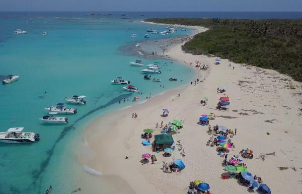

British Virgin Islands
VISIT the BVI with SUNSET TRAVELSThe British Virgin Islands, part of a volcanic archipelago in the Caribbean, is a British overseas territory. Comprising 4 main islands and many smaller ones, it's known for its reef-lined beaches and as a yachting destination. The largest island, Tortola, is home to the capital, Road Town, and rainforest-filled Sage Mountain National Park. On Virgin Gorda island is the Baths, a labyrinth of beachside boulders.
The British Virgin Islands comprise around 60 tropical Caribbean islands, ranging in size from the largest, Tortola, being 20 km (12 mi) long and 5 km (3 mi) wide, to tiny uninhabited islets, altogether about 150 square kilometres (58 square miles) in extent. They are located in the Virgin Islands archipelago, a few miles east of the US Virgin Islands, and about 95 km (59 mi) from the Puerto Rican mainland. About 150 km (93 mi) east south-east lies Anguilla. The North Atlantic Ocean lies to the east of the islands, and the Caribbean Sea lies to the west. Most of the islands are volcanic in origin and have a hilly, rugged terrain. Anegada is geologically distinct from the rest of the group and is a flat island composed of limestone and coral.
The Virgin Islands were first settled by the Arawak from South America around 100 BC (though there is some evidence of Amerindian presence on the islands as far back as 1500 BC). The Arawaks inhabited the islands until the 15th century when they were displaced by the more aggressive Caribs, a tribe from the Lesser Antilles islands, after whom the Caribbean Sea is named.
Citation: WikiJamaica
VISIT JAMAICA with SUNSET TRAVELS
Jamaica, a Caribbean island nation, has a lush topography of mountains, rainforests and reef-lined beaches. Many of its all-inclusive resorts are clustered in Montego Bay, with its British-colonial architecture, and Negril, known for its diving and snorkeling sites. Jamaica is famed as the birthplace of reggae music, and its capital Kingston is home to the Bob Marley Museum, dedicated to the famous singer.
Previously inhabited by the indigenous Arawak and Taíno peoples, the island came under Spanish rule following the arrival of Christopher Columbus in 1494. Many of the indigenous people died of disease, and the Spanish transplanted African slaves to Jamaica as labourers. The island remained a possession of Spain until 1655, when England (later Great Britain) conquered it and renamed it Jamaica. Under British colonial rule Jamaica became a leading sugar exporter, with its plantation economy highly dependent on African slaves. The British fully emancipated all slaves in 1838, and many freedmen chose to have subsistence farms rather than to work on plantations. Beginning in the 1840s, the British utilized Chinese and Indian indentured labour to work on plantations. The island achieved independence from the United Kingdom on 6 August 1962.
With 2.9 million people, Jamaica is the third-most populous Anglophone country in the Americas (after the United States and Canada), and the fourth-most populous country in the Caribbean. Kingston is the country's capital and largest city, with a population of 937,700. Jamaicans mainly have African ancestry, with significant European, Chinese, Indian, Lebanese, and mixed-race minorities. Due to a high rate of emigration for work since the 1960s, Jamaica has a large diaspora, particularly in Canada, the United Kingdom, and the United States.
Citation: WikiMaldives

The Maldives, officially the Republic of Maldives, is an Asian country, located in the Indian Ocean, situated in the Arabian Sea. It lies southwest of Sri Lanka and India, about 1,000 kilometres (620 mi) from the Asian continent. The chain of 26 atolls stretches from Ihavandhippolhu Atoll in the north to the Addu City in the south. Comprising a territory spanning roughly 298 square kilometres (115 sq mi), the Maldives is one of the world's most geographically dispersed sovereign states as well as the smallest Asian country by land area and population, with around 427,756 inhabitants. Malé is the capital and a populated city, traditionally called the "King's Island" for its central location.
The Maldives consists of 1,192 coral islands grouped in a double chain of 26 atolls, along the north-south direction, spread over roughly 90,000 square kilometres (35,000 sq mi), making this one of the world's most dispersed countries. It lies between latitudes 1°S and 8°N, and longitudes 72° and 74°E. The atolls are composed of live coral reefs and sand bars, situated atop a submarine ridge 960 kilometres (600 mi) long that rises abruptly from the depths of the Indian Ocean and runs north to south.
Citation: WikiBora Bora
Bora Bora is a 30.55 km2 (12 sq mi) island group in the Leeward group in the western part of the Society Islands of French Polynesia, an overseas collectivity of France in the Pacific Ocean. The main island, located about 230 kilometres (143 miles) northwest of Papeete, is surrounded by a lagoon and a barrier reef. In the center of the island are the remnants of an extinct volcano rising to two peaks, Mount Pahia and Mount Otemanu, the highest point at 727 metres (2,385 feet). It is part of the commune of Bora-Bora, which also includes the atoll of Tūpai.
Bora Bora is a major international tourist destination, famous for its aqua-centric luxury resorts. The major settlement, Vaitape, is on the western side of the main island, opposite the main channel into the lagoon. Produce of the island is mostly limited to what can be obtained from the sea and the plentiful coconut trees, which were historically of economic importance for copra.
Citation: WikiBahamas
The Bahamas, known officially as the Commonwealth of The Bahamas, is a country within the Lucayan Archipelago. The archipelagic state consists of more than 700 islands, cays, and islets in the Atlantic Ocean, and is located north of Cuba and Hispaniola (Haiti and the Dominican Republic), northwest of the Turks and Caicos Islands, southeast of the U.S. state of Florida, and east of the Florida Keys. The capital is Nassau on the island of New Providence. The designation of "the Bahamas" can refer either to the country or to the larger island chain that it shares with the Turks and Caicos Islands. The Royal Bahamas Defence Force describes the Bahamas territory as encompassing 470,000 km2 (180,000 sq mi) of ocean space.
The Bahamas is the site of Columbus's first landfall in the New World in 1492. At that time, the islands were inhabited by the Lucayans, a branch of the Arawakan-speaking Taíno people. Although the Spanish never colonised the Bahamas, they shipped the native Lucayans to slavery in Hispaniola. The islands were mostly deserted from 1513 until 1648, when English colonists from Bermuda settled on the island of Eleuthera.
Citation: WikiPuerto Rico
Puerto Rico (Spanish for "Rich Port"), officially the Commonwealth of Puerto Rico (Spanish: Estado Libre Asociado de Puerto Rico, lit. "Free Associated State of Puerto Rico") and briefly called Porto Rico, is an unincorporated territory of the United States located in the northeast Caribbean Sea, approximately 1,000 miles (1,600 km) southeast of Miami, Florida.
An archipelago among the Greater Antilles, Puerto Rico includes the eponymous main island and several smaller islands, such as Mona, Culebra, and Vieques. The capital and most populous city is San Juan. The territory's total population is approximately 3.4 million. Spanish and English are the official languages, though Spanish predominates. Puerto Rico's unique heritage, culture, and natural beauty has made it a top tourism destination.
Citation: WikiCosta Rica
Costa Rica, officially the Republic of Costa Rica (Spanish: República de Costa Rica), is a country in Central America, bordered by Nicaragua to the north, the Caribbean Sea to the northeast, Panama to the southeast, the Pacific Ocean to the southwest, and Ecuador to the south of Cocos Island. It has a population of around 5 million in a land area of 51,060 square kilometers (19,714 square miles). An estimated 333,980 people live in the capital and largest city, San José with around 2 million people in the surrounding metropolitan area.
The sovereign state of Costa Rica is a unitary presidential constitutional republic. It is known for its long-standing and stable democracy, and for its highly educated workforce, most of whom speak English. The country spends roughly 6.9% of its budget (2016) on education, compared to a global average of 4.4%. Its economy, once heavily dependent on agriculture, has diversified to include sectors such as finance, corporate services for foreign companies, pharmaceuticals, and ecotourism. Many foreign manufacturing and services companies operate in Costa Rica's Free Trade Zones (FTZ) where they benefit from investment and tax incentives.
Citation: WikiBelize

Belize is a country located on the eastern coast of Central America. Belize is bordered on the northwest by Mexico, on the east by the Caribbean Sea, and on the south and west by Guatemala. It has an area of 22,970 square kilometres (8,867 sq mi) and a population of 387,879 (2017).Its mainland is about 180 mi (290 km) long and 68 mi (110 km) wide. It has the lowest population and population density in Central America. The country's population growth rate of 1.87% per year (2015) is the second highest in the region and one of the highest in the Western Hemisphere.
The Mayan civilization spread into the area of Belize between 1500 B.C. and 300 A.D. and flourished until about 1200. European exploration campaigns began in 1502 when Christopher Columbus sailed along the Gulf of Honduras. European settlement was begun by English settlers in 1638. This period was also marked by Spain and Britain both laying claim to the land until Britain defeated the Spanish in the Battle of St. George's Caye (1798). It became a British colony in 1840, known as British Honduras, and a Crown colony in 1862. Independence was achieved from the United Kingdom on 21 September 1981.
Citation: WikiHawaii

Hawaii is the 50th and most recent state to have joined the United States, having received statehood on August 21, 1959.[9] Hawaii is the only U.S. state located in Oceania, the only U.S. state located outside North America, and the only one composed entirely of islands. It is the northernmost island group in Polynesia, occupying most of an archipelago in the central Pacific Ocean.
The state encompasses nearly the entire volcanic Hawaiian archipelago, which comprises hundreds of islands spread over 1,500 miles (2,400 km). At the southeastern end of the archipelago, the eight main islands are—in order from northwest to southeast: Niʻihau, Kauaʻi, Oʻahu, Molokaʻi, Lānaʻi, Kahoʻolawe, Maui, and the Island of Hawaiʻi. The last is the largest island in the group; it is often called the "Big Island" or "Hawaiʻi Island" to avoid confusion with the state or archipelago. The archipelago is physiographically and ethnologically part of the Polynesian subregion of Oceania.
Citation: Wiki